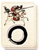

Requires
- Buildings:

- Arts: 
- Resources:

Enables


Basic Building Statistics (can be modified by difficulty level, arts, skills, traits and retainers)
- Cost: 8000
- -1 to samurai cavalry recruitment times in this province
If you are first to construct
- +5 charge bonus for all cavalry units
Description
A horse has a great heart, and need only be reminded of it.
Riders and horses trained at a legendary school have skills and expertise that far surpass those of any other cavalry. But to become a legend is not easy, to say the least. The masters here have moved beyond understanding their skill to a state where they embody their skill. They are at one with their horses, weapons and comrades-in-arms, and can perform acts of martial skill that are almost unrivalled. Horses, according to myth, are much hunted as prey by kappa, or water spirits, who try to pull them down to a watery death. Stories tell of kappas being caught and forced to promise never to attack horses again, usually with positive results in that the promises are kept. A horse-headed warrior, rather than a spirit, also serves the ruler of Hell, Emma-O. This guard, along with an ox-headed warrior, bring the dead before Emma-O and his magic mirror that reflects all the sins of a deceased man so that Emma-O may judge them fairly.